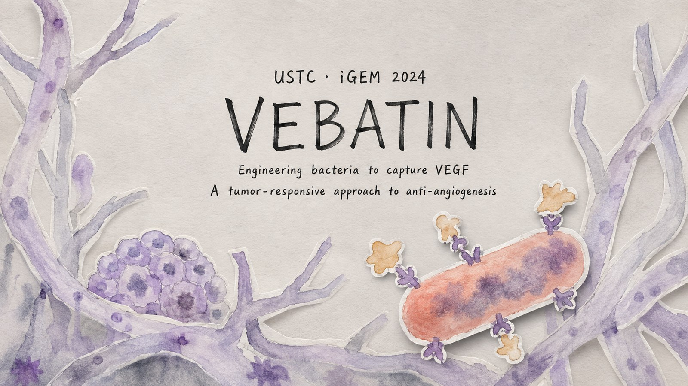
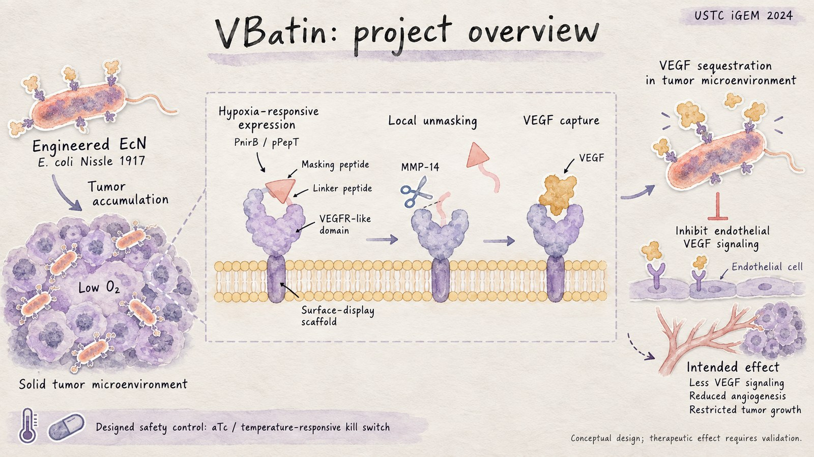
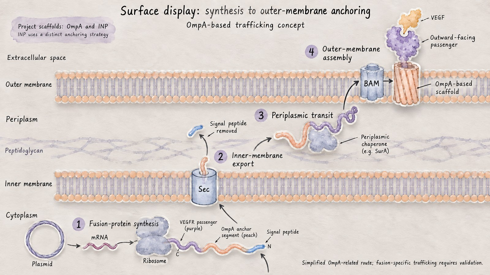
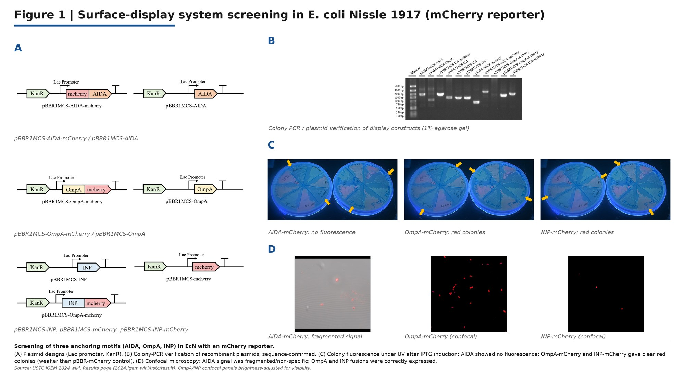
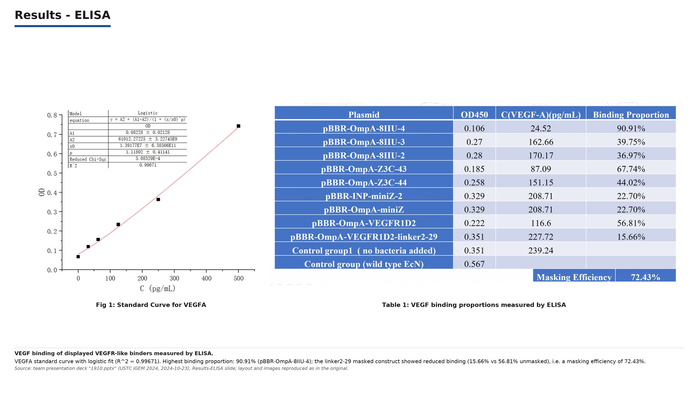

Synthetic Biology
Targeted inhibition of tumor angiogenesis
Engineered Escherichia coli Nissle 1917 displaying VEGF-binding proteins, activated only inside the tumor microenvironment.

Concept
Tumors depend on new blood vessels, and VEGF is the principal signal driving that growth. Systemic anti-VEGF therapy works but affects normal vasculature too. E. coli Nissle 1917 has a useful property here: it preferentially colonizes solid tumors, which makes it a delivery chassis that concentrates itself where the drug is needed.
We engineered EcN to display VEGF-binding proteins on its surface, so the bacteria sequester VEGF locally and inhibit angiogenesis from inside the tumor.

Surface display
Screened four surface-display systems by fusing each to mCherry and imaging localization with confocal microscopy, then validated the VEGF-binding capacity of the selected candidates by ELISA. Display efficiency and retained binding activity are separate problems, so both had to be measured.


Tumor-responsive activation
Tumor colonization is a preference, not a guarantee, so we added a second layer of specificity. The binding protein carries an MMP-responsive masking peptide: matrix metalloproteinases are enriched in the tumor microenvironment, so the mask is cleaved and the binder activated locally. Bacteria that stray elsewhere stay inert, reducing off-target risk.


Modeling
Built a finite element model in Python simulating antigen-antibody interaction kinetics to estimate inhibition efficiency. Model predictions were consistent with the experimental ELISA results, which gave us a way to reason about binder density and diffusion without running every condition at the bench.